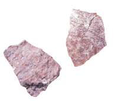

Potassium
- Basic Information
- Name : Potassium
- Symbol : K
- Atomic Number : 19
- Atomiv Weight : 39.0983
- Standard State : Solid at 298 K
- CAS Registry ID : 7440-09-7
- Group in Periodic Table : 1
- Period in Periodic Table : 4
- Group Name : Alkali Metal
- Block in Periodic Table : s-block
- Color : Silvery White
- Classification : Metallic
- Description
- Potassium is a metal and is the seventh most abundant and makes up about 1.5 % by weight of the earth's crust. Potassium is an essential constituent for plant growth and it is found in most soils. It is also a vital element in the human diet.
Potassium is never found free in nature, but is obtained by electrolysis of the chloride or hydroxide, much in the same manner as prepared by Davy. It is one of the most reactive and electropositive of metals and, apart from lithium, it is the least dense known metal. It is soft and easily cut with a knife. It is silvery in appearance immediately after a fresh surface is exposed.
It oxidises very rapidly in air and must be stored under argon or under a suitable mineral oil. As do all the other metals of the alkali group, it decomposes in water with the evolution of hydrogen. It usually catches fire during the reaction with water. Potassium and its salts impart a lilac colour to flames.